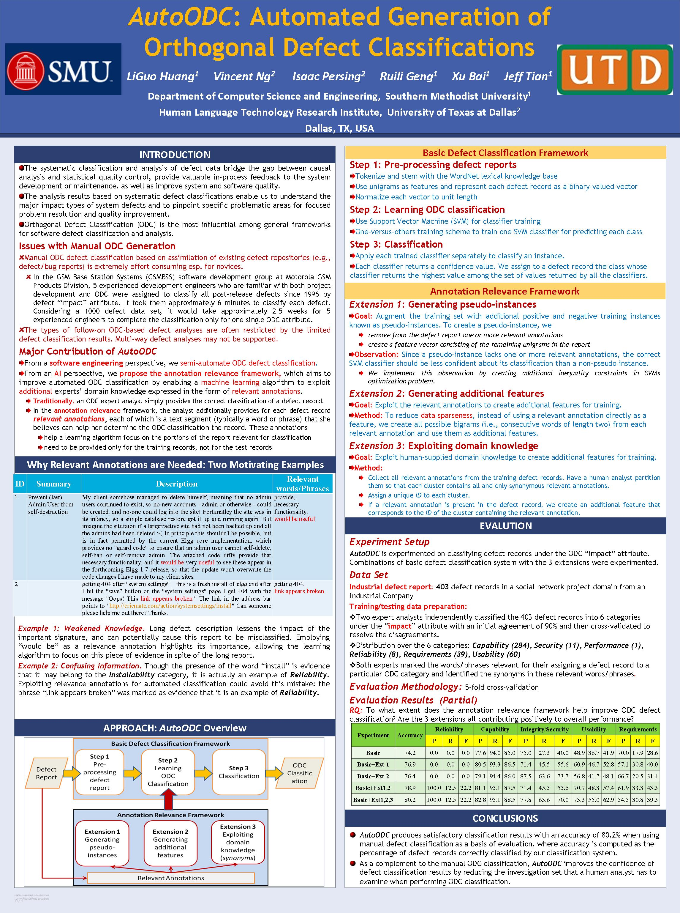

AutoODC: Automated Generation of Orthogonal Defect Classifications
LiGuo Huang, Vincent Ng, Isaac Persing, Ruili Geng, Xu Bai, and Jeff Tian.
Proceedings of the 26th IEEE/ACM International Conference on Automated Software Engineering, pp. 412-415, 2011.
Click here for the Postscript and PDF version.
The talk slides are available here.
Abstract
Orthogonal Defect Classification (ODC), the most influential framework for
software defect classification and analysis, provides valuable in-process
feedback to system development and maintenance. Conducting ODC classification
on existing organizational defect reports is human-intensive and rquires
experts' knowledge of both ODC and system domains. This paper presents AutoODC,
an approach and tool for automating ODC classification by casting it as
a supervised text classification problem. Rather than merely applying the
standard machine learning framework to this task, we seek to acquire a better
ODC classification system by integrating experts' ODC experience and domain
knoweldge into the learning process via proposing a novel Relevance Annotation
Framework. We evalauted AutoODC on an industrial defect report from the social
network domain. AutoODC is a promising approach: not only does it leverage
minimal human effort beyong the human annotations typically required by
standard machine learning approaches, but it achieves an overall accuracy
of 80.2% when using manual classifications as a basis of comparison.
BibTeX entry
@InProceedings{Huang+etal:11a,
author = {LiGuo Huang and Vincent Ng and Isaac Persing and Ruili Geng and Xu Bai and and Jeff Tian},
title = {AutoODC: Automated Generation of Orthogonal Defect Classification},
booktitle = {Proceedings of the 26th IEEE/ACM International Conference on Automated Software Engineering},
pages = {412--415},
year = 2011
}
